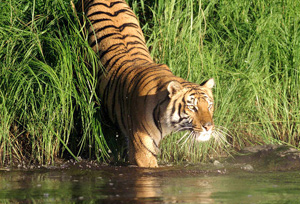
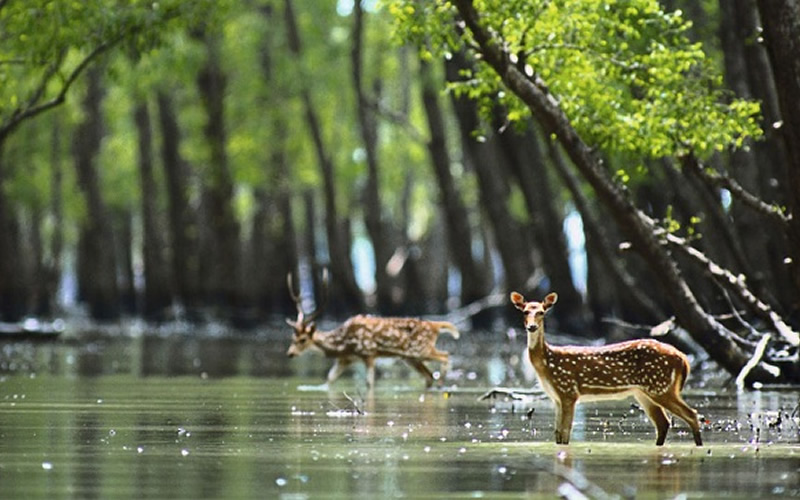

Sunderban National Park | |
|
A national park, a tiger reserve and a biosphere reserve in India the Sundarbans National Park is the choice of every tiger lover coming to India for catching the mightiest glimpses of this majestic creature along the Ganges delta of India and Bangladesh. The delta is closely being crusted with Mangrove forests to refurbish withthe most ardent Sunderban area along the Gangetic plains that justifies the name; to mean it as "the beautiful forest"and is being recognized as one of the largest reserves for the Bengal Tigers with the presence of the Sunderi tree species. A UNESCO World Heritage site, the Sundarbans area covers 4624 sq km in India alone to incorporate a variety of bird, reptile and invertebrate species, including the salt-water crocodile. The present Sundarbans National Park was declared as the core area of Sundarbans Tiger Reserve in 1973 and a wildlife sanctuary in 1977. On May 4, 1984 it was declared a National Park. Locating between 30° 24' - 30° 28' N latitude and between 77° 40' - 77° 44' E longitude in West Bengal, the average altitude of 7.5 m of the park constitutes 54 small islands and is crisscrossed by several tributaries of the Ganges. Bringing more interest in this region, the Sundarbans National Park is also composed of the largest estuarine mangrove forest in the world. The average temperature of the Sundarbans area can be marked as 20 °C- 48 °C drenched with heavy rainfalls with humidity as high as 80% as it is close to the Bay of Bengal. Monsoons can be experienced here during the months of mid-June to mid-September. |  |
| History | |
|
Sundarbans, lying precisely on the world's largest delta and mangrove swamp is formed by the merging of three rivers- the Ganges, the Brahmaputra and Meghnais world's largest estuarine sanctuary. The land that acted as a shelter for the refugees in 13th century is today declared as a World Heritage Center and is the most renowned place for tiger conservation under the Tiger Project. Earlier being familiarized with the name- Sundarbans Tiger Reserve in the year 1973, it was the part of the then 24 Parganas division. The area congested with dense mangroves and swampy islands, being fitted for the tiger inhabitants and so the introduction of tiger project took place in the year 2004 as a scientific research project. To continue the project in a more progressive way, the Save the Tiger Fund and the United States Fish and Wildlife Service generously donated funds to support the initial phase of researchand to collect data on tiger ecology. And today this tiger conservation effort in the Sunderban area is really rocking the dense masses with the exemplified glaring of royal tigers in Bengal. It is estimated that there are now 400 Royal Bengal tigers and about 30,000 spotted deer in the area. The forest is called 'Sunderban'due to the rich growth of Sundari trees. |
|
| Wildlife The Sundarbans forest is home to more than 400 tigers. The Royal Bengal Tigers have developed a unique characteristic of swimming in the saline waters, and are famous for their man-eating tendencies. Tigers can be seen on the river banks sunbathing between November and February. Apart from the Royal Bengal Tiger; Fishing Cats, Leopard Cats, Macaques, Wild Boar, Indian Grey Mongoose, Fox, Jungle Cat, Flying Fox, Pangolin, Chital, are also found in abundance in the Sundarbans. |
 |
|
| Flora The mangrove vegetation of Sundarbansconsists of 64 plant species with the capacity to withstand estuarine conditions and saline showering on account of tidal effects. In the month of April and May the flaming red leaves of the Genwa (Excoecariaagallocha) the crab-like red flowers of the Kankra (Bruguieragymnorrhiza) and the yellow flowers of Khalsi (Aegicerascorniculatum) can be seen. Some of the other commonly found plants and trees in the park are Dhundal (or cannonball mangrove, Xylocarpusgranatum), Passur (Xylocarpusmekongensis), Garjan (Rhizophora spp.), Sundari (Heritierafomes) and Goran (Ceriopsdecandra). |
 |
| Places of Interest
Sajnekhali - the place is best known for the bird sanctuaryand is the most preferable place to experience accommodative facilities. Tourists can find a Mango Interpretation Center here and different watch towers at different zones like Sajnekhali, Sudhanyakhali, Netidhopan, Haldi and a number of other places to find the outstanding glimpses of the royal tigers.
Bhagbatpur Crocodile Project - A crocodile breeding farm in the Bhagbatpur area, this place is easily accessible from Namkhanaand is a hatchery of the largest estuarine crocodile in the world.
Piyali Island - the gateway to Sundarbans, Piyali is being developed as a tourist complex and is located 72 kms from Kolkata, lying very closer to Sajnekhali. The Piyali River flows through the island to join the Matla River. At Piyali Island, people can have a nature's walk, enjoy a boat ride, bird watching and savor the village life.
| Nearby Places
Hiran Point - located in the southern point if Sundarbans and Khulna district, the Hiran Point is the soothing place surrounded by attractive water bodies from three sides and is one of the popular attractions of Sundarbans.
Halliday Island - localizing at the south zone of the Sundarbans area, the Halliday Island is being visited by the tremendous tourists especially to spot the barking deer in the vicinity.
Tin Kona Island - yet another popular hotspot for espying wildlife in the Sundarbans zone, the Tin Kona Island is the place notable for numerous tigers and deer to exemplify the real wilderness of the area.
| Travel Information
Sundarbans National Park resides in the south eastern fringe of Indian state West Bengal and some parts ofthe Sundarbans Reserve Forest. The adjacent inhabited areas of Indian part of Sundarbans are well connected with Kolkata by both roadways and railways. More conveniently, the capital and metro city Kolkata is well connected with big cities of India by Road, Rail and Air. Kolkata is also connected with Bangkok, Singapore, Hongkong, Kathmandu and Dhaka, etc. by air.
Places connected with Kolkata are also much commuting, from where a motor boat can take the tourists to the Sundarbans National Park. These approachable places are:
- Godkhali Port
- Koikhali
- Namkhana
- Canning
| Hotels in Sunderban area
For comfy residing presides, different forest lodges and forest rest-houses are available at Sajnekhali, Bakkhali and Piyali to make the wildlife pleasure more rewarding. Lodging facilities are also available at Sunderban Tiger Camp on Dayapur Island, a resort overlooking the national park, and at Sundarbans Jungle Camp on Bali Island run by Help Tourism Group with collaboration with local communities and members of Bali Nature and Wildlife Conservation Society. Economical lodging facilities are also available at Prakrity village resort on Jemspur.
Other than that some more readily options of lodges and resorts at Sundarbans are available to complete the wildlife journey in a more erotic way: